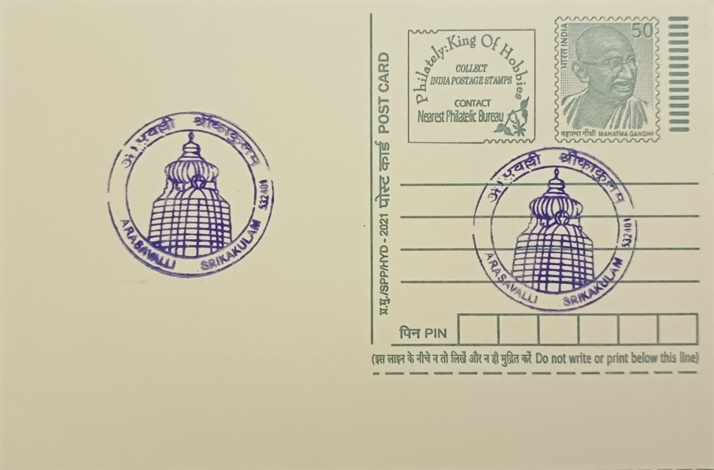

Gopuram of Sri Suryanarayana Swamy Temple
శ్రీ సూర్యనారాయణ స్వామి ఆలయ గోపురం


Tradition holds that the sage Kasyapa first installed the image of Surya at Arasavalli for the welfare of mankind, and the site has been venerated as a seat of solar worship since antiquity. Inscriptional evidence found on the temple walls points to a more concrete founding in the 7th century CE, when Devendra Varma, a ruler of the Eastern Ganga dynasty of Kalinga, is credited with raising the shrine, with later grants recorded under Aditya Vishnu Sarma and Bhanu Sarma of the same clan supporting its upkeep. The name Arasavalli, by which the surrounding village and post office are known, has become inseparable from the temple itself, the two identities reinforcing each other over centuries of continuous worship.
The temple enshrines Surya in the form of Sri Suryanarayana Swamy, with the principal image carved from black stone, a departure from the more common Vishnu or Shiva dedications found across South India. Alongside Konark in Odisha, Arasavalli is counted among the handful of temples in the subcontinent still dedicated expressly to sun worship, a devotional strand that was once widespread in ancient India but receded sharply as mainstream Hindu practice consolidated around Vaishnava, Shaiva, and Shakta traditions. This relative rarity gives the temple a significance beyond its regional pilgrimage role, marking it as a surviving link to an older layer of Indian religious practice that has largely faded elsewhere.
Architecturally, the temple follows the Rekha Deula style of Kalinga architecture, the same idiom associated with the Jagannath temple at Puri, and tradition attributes its craftsmanship to the Vishwakarma Brahmins, or Maharanas, of Orissa. Its most distinctive engineering feature is a precise solar alignment: the structure is oriented so that the sun's first rays fall directly on the deity's feet for a few minutes during specific periods of the year, notably around Ratha Saptami, a feat that required sophisticated observational astronomy at the time of construction. The temple's entrance is marked by a large sculptural depiction of Surya riding his chariot drawn by seven horses, a standard iconographic motif for the sun god rendered here at the gateway itself.
The temple's history has not been one of unbroken continuity in physical terms, even as its ritual life persisted. Accounts describe the structure being damaged during the medieval period amid regional conflicts, including episodes attributed to Qutub Shahi and Nizam-era forces, after which it was rebuilt in keeping with its original Kalinga style; much of what stands today reflects renovation work carried out in the 18th century rather than the unaltered 7th-century fabric. Despite this history of damage and reconstruction, the temple's defining astronomical alignment with the rising sun has been preserved through each rebuilding, remaining the feature for which the site is best known among both pilgrims and visiting scholars of temple architecture.
The temple today functions as an active place of worship administered under the Andhra Pradesh government's temple endowments framework, drawing its largest crowds during the Ratha Saptami festival, when the alignment of sunrise with the deity's feet is specifically observed by throngs of devotees. It is also listed as a tourist and heritage site by the Srikakulam district administration, which markets it alongside the town's other attractions just a kilometre from the district headquarters. The gopuram that gives this entry its subject marks the principal entrance to the shrine, and its upkeep falls to the same temple administration that oversees the daily rituals, making the structure as much a functioning gateway for worshippers today as it is a marker of the site's long architectural history.
| Date of Introduction | April 11, 2013 |
|---|---|
| Address | Sub Postmaster, |
| Arasavalli SO, | |
| Srikakulam (dt.), Andhra Pradesh - 532401. |